Bukti pengujian 1.3.0
Build
Runtime: Linux-6.18.44-fc-v880-x86_64-with-glibc2.39 · Node v22.23.5 · Python 3.13.18 · Google Chrome for Testing 153.0.8010.12 · Playwright 1.63.0
d69d4921d7f04c1a · dist d49eb6de1f8df3e2f22151e3efd282127de4bfcf25f207cfbb728772f2a56461Runtime: Linux-6.18.44-fc-v880-x86_64-with-glibc2.39 · Node v22.23.5 · Python 3.13.18 · Google Chrome for Testing 153.0.8010.12 · Playwright 1.63.0
Setiap baris berasal dari qa/binding.json, yang memuat SHA-256 setiap log dan receipt dan diverifikasi ulang oleh tools/assess.py. Bukti 1.2.0 dan sebelumnya tetap di folder evidence/ lain dan tidak diubah, kecuali bukti generasi bank (evidence/bank/) yang mengikuti bank 1.2.0; versi 1.1.0-nya diarsipkan di historical/bank-evidence-1.1.0.zip.
Suite
| Suite | Status | Assertion | Durasi | Berkas | Catatan |
|---|---|---|---|---|---|
compile-check | PASS | 108 | 2.41 s | log | |
glyphs-reproducible | PASS | 1 | 0.09 s | log | |
curriculum | PASS | 1 | 0.51 s | log | |
player-run | PASS | 18 | 0.06 s | log | |
player-ledger | PASS | 1 | 0.1 s | log | |
data-contract | PASS | 1 | 0.28 s | log | |
teacher-exports | PASS | 1 | 0.43 s | log | |
ui-catalog-tokens | PASS | 4 | 0.34 s | log | |
upgrade-restore-v1.0 | PASS | 1 | 0.1 s | log | |
player-ux-domain | PASS | 1 | 0.15 s | log | |
bank-snapshot-upgrade | PASS | 1 | 0.06 s | log | |
upgrade-verified-package | PASS | 1 | 0.05 s | log | |
data-ux-contract | PASS | 7 | 0.45 s | log | |
ui-session-plan | PASS | 1 | 0.09 s | log | |
teacher-ux-evidence | PASS | 1 | 0.95 s | log | |
bank-verify | PASS | 1 | 23.72 s | log | |
bank-audit-distribution | PASS | 12 | 7.74 s | log | |
bank-determinism | PASS | 2 | 41.83 s | log bank-determinism.json | |
bank-domain-prose | PASS | 9 | 6.84 s | log bank-domain-prose.json | |
math-linear-roundtrip | PASS | 26 | 11.91 s | log math-linear-roundtrip.json | |
math-exports | PASS | 14 | 0.09 s | log math-exports.json | |
v12-bank-model | PASS | 32 | 5.91 s | log bank-model.json | |
v12-feedback-export | PASS | 1 | 0.21 s | log | |
documents-reopened | BLOCKED_ENV | 7 | 0.89 s | log documents-reopened.json | evidence/v13/receipts/documents-reopened.json: environment-blocked rows: ['docx-render-equations'] |
data-large-backup | PASS | 17 | 62.11 s | log data-large-backup.json | |
data-cache-policy | PASS | 10 | 0.03 s | log data-cache-policy.json | |
upgrade-bank-1.2 | PASS | 6 | 0.1 s | log upgrade-bank-1.2.json | |
qa-fault-injection | PASS | 20 | 10.65 s | log qa-fault-injection.json | |
e2e-browser | PASS | 262 | 68.36 s | log browser-data.json browser-performance.json browser-layout.json browser-journeys.json browser-semantics.json browser-faults.json browser-teacher.json browser-offline.json | |
ux-extended-browser | PASS | 409 | 116.64 s | log browser-shell-ux.json browser-school-ux.json browser-player-ux.json browser-data-ux.json browser-visual-ux.json browser-reflow-ux.json | |
performance-budgets | PASS | 27 | 29.93 s | log performance-budgets.json | |
v12-browser-chromium | PASS | 14 | 8.41 s | log browser-chromium.json | |
v12-keyboard | PASS | 27 | 2.52 s | log keyboard.json | |
v12-print-contrast | PASS | 2 | 2.16 s | log print-contrast.json | |
v12-roles-reflow | PASS | 240 | 8.08 s | log roles-reflow.json | |
browser-v13-chromium | PASS | 11 | 69.54 s | log browser-v13-chromium.json | |
browser-v13-firefox | BLOCKED_ENV | 1 | 0.66 s | log browser-v13-firefox.json | evidence/v13/receipts/browser-v13-firefox.json: environment-blocked rows: ['ENGINE'] |
browser-v13-webkit | BLOCKED_ENV | 1 | 0.68 s | log browser-v13-webkit.json | evidence/v13/receipts/browser-v13-webkit.json: environment-blocked rows: ['ENGINE'] |
hosting-smoke | PASS | 1 | 2.47 s | log | |
clean-build-twice | PASS | 2 | 3.87 s | log clean-build.json |
Bukti lain
- audit-rerun/: skrip reproduksi audit 1.2.0 dijalankan ulang pada rilis ini (verifier linear: 0 selisih).
- bank/: identitas bank 1.1.0 per paket dan log editorial 1.1.0 → 1.2.0.
- historical/: register 1.2.0, register temuan dan kriteria penutupan audit.
- release/: manifest rilis, dependensi dan uji arsip.
Sebelum dan sesudah
Lihat screens/README.md untuk cara pembuatan.
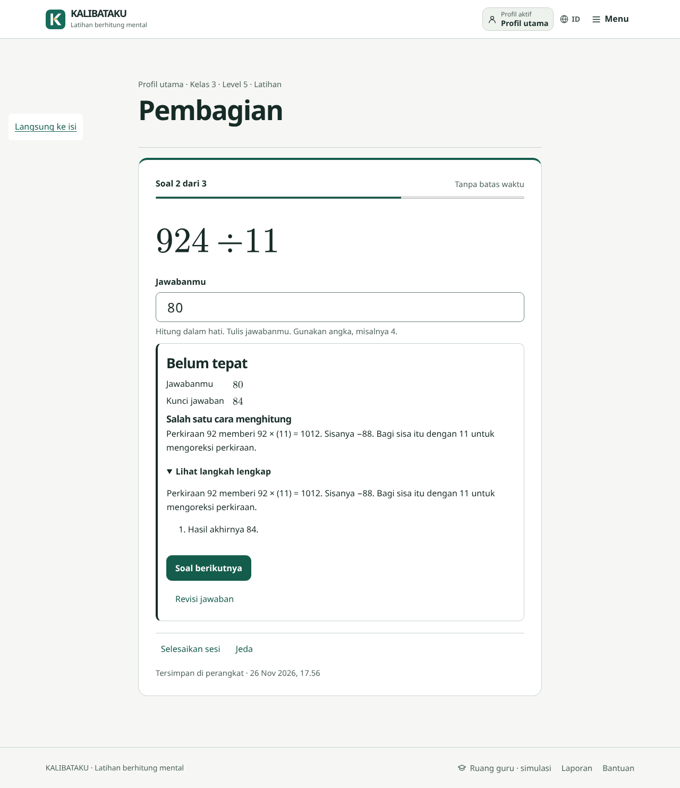
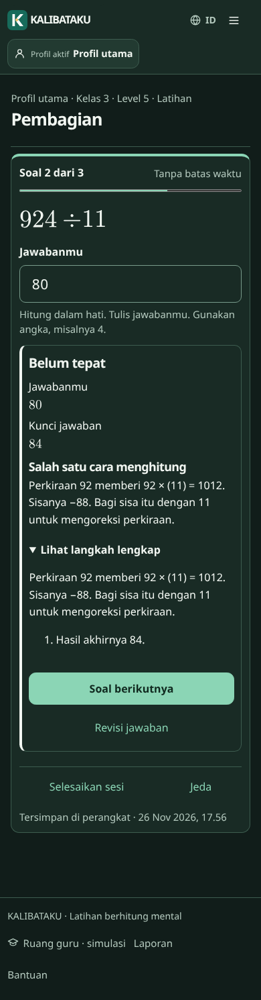
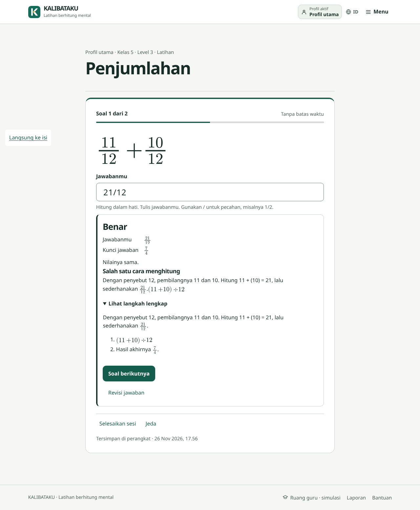
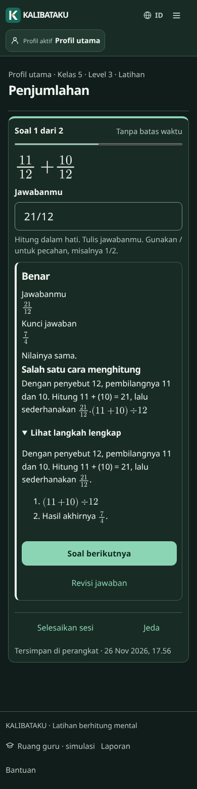
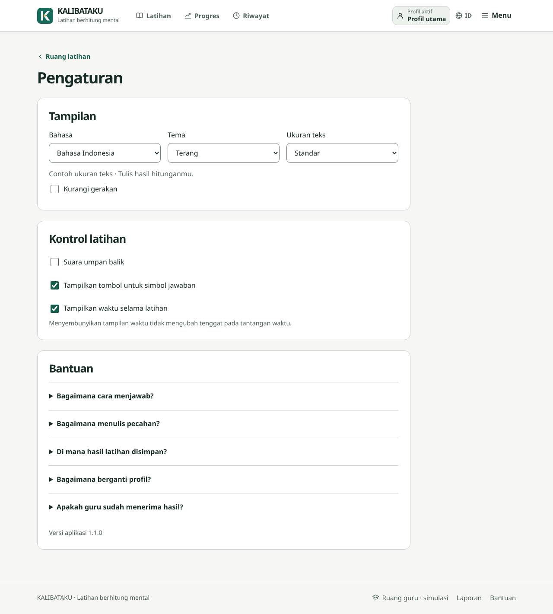
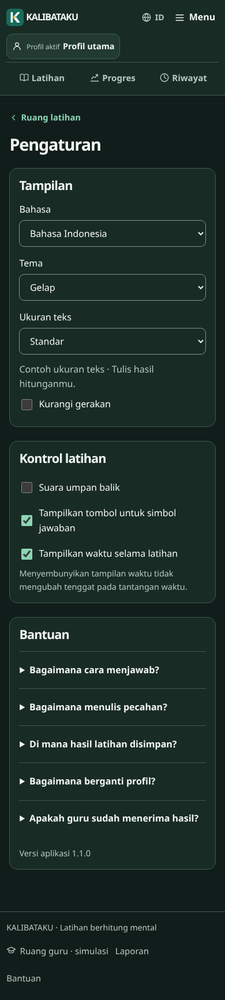
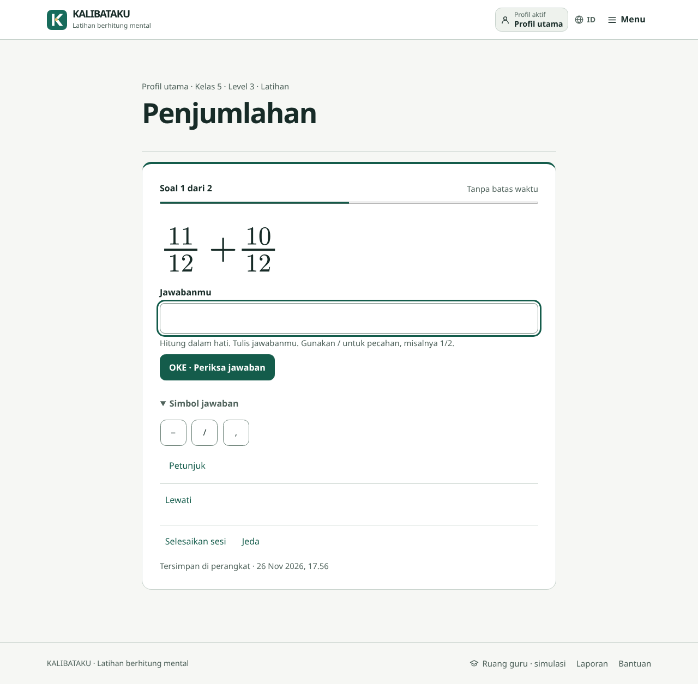
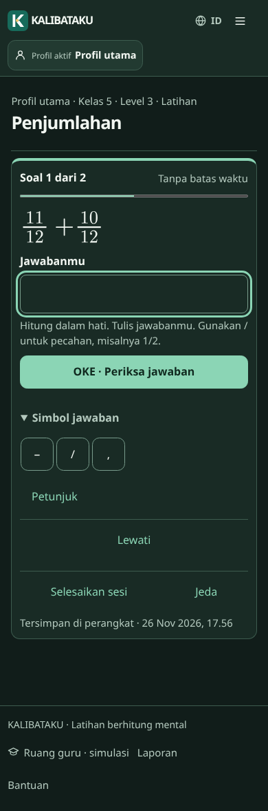
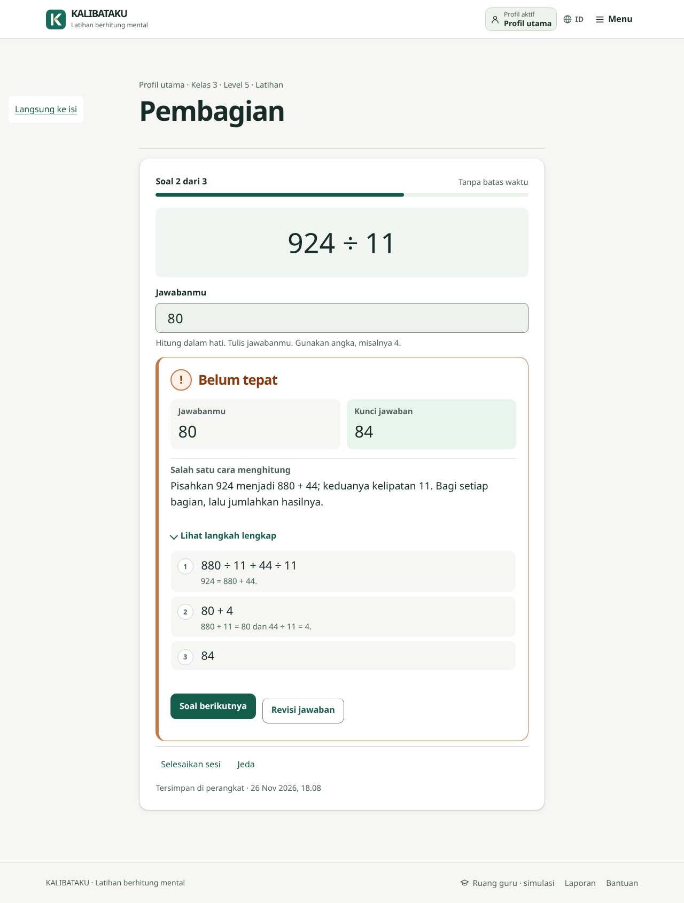
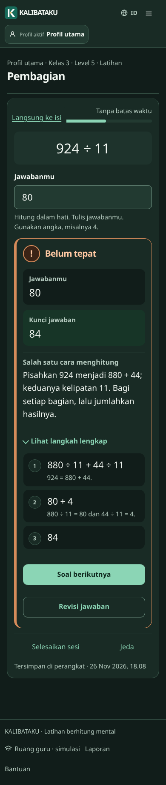
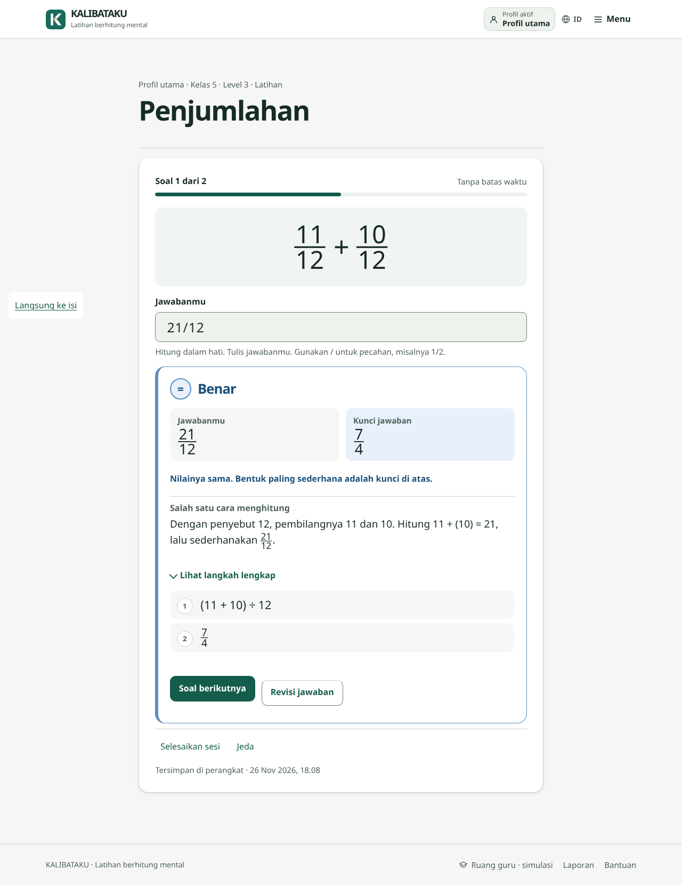
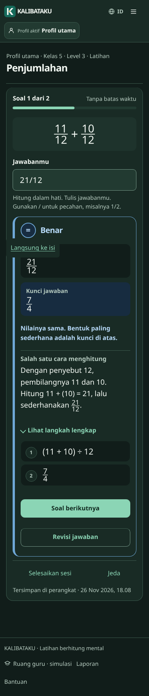
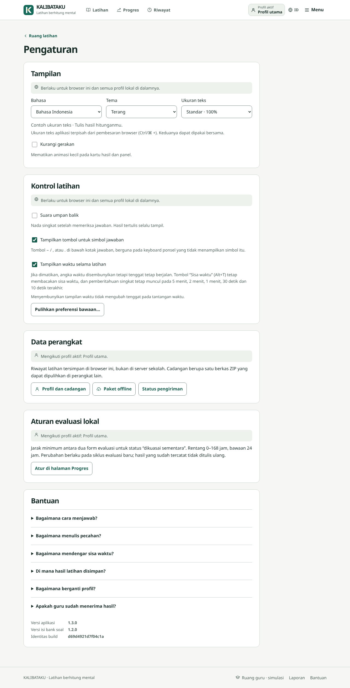
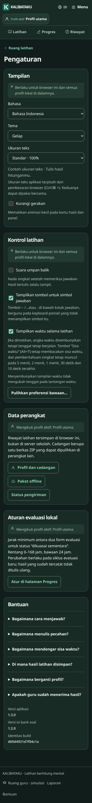
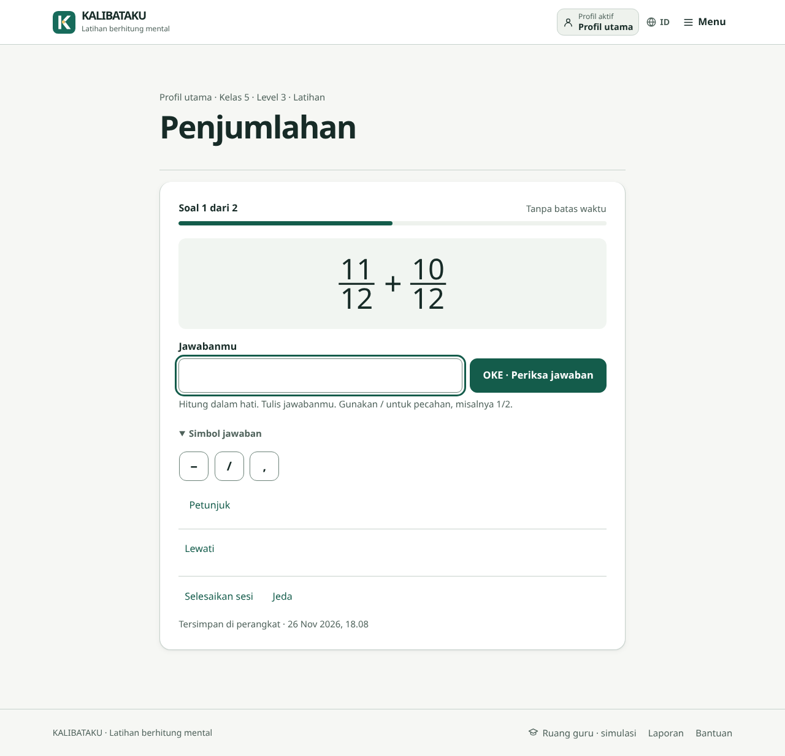
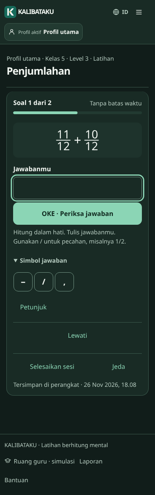